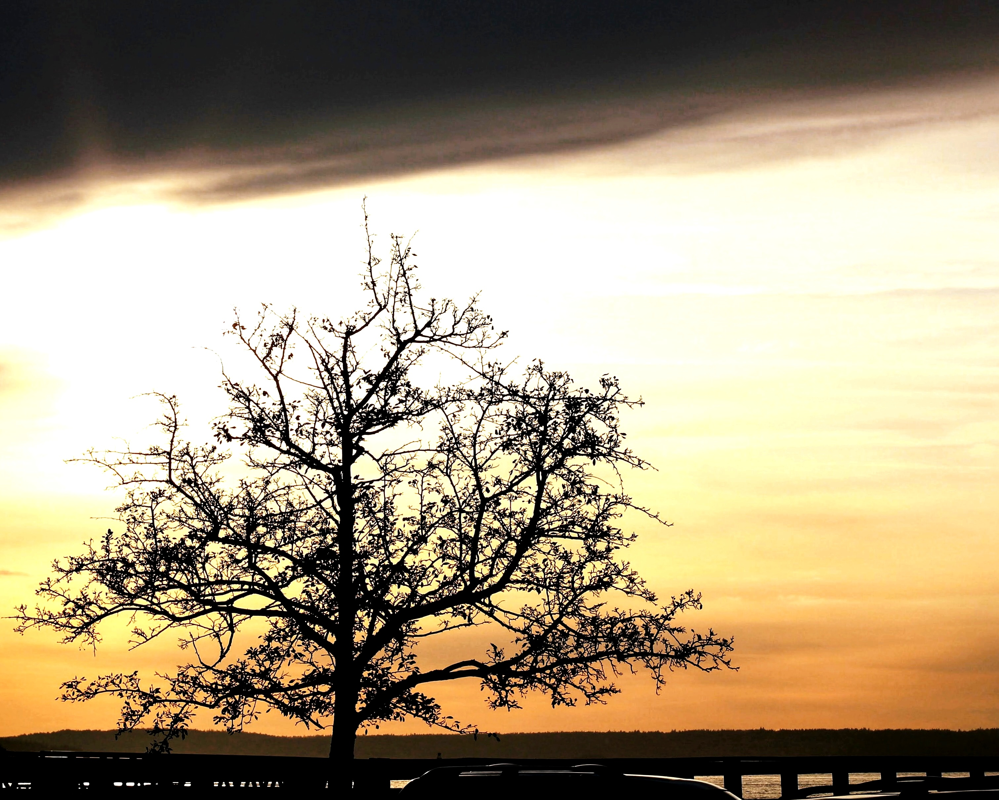

REFRACT
Photography Analysis & Enhancement
IMG_7741_Original Edited.jpg
Multi-LLM Analysis
71.7/100
Consensus Score
gemini
65.0/100
The silhouette is interesting, but the image is underexposed and lacks visual impact. Brightening the image and adding a vignette would draw more attention to the subject.
- Increase overall brightness by 15%
- Reduce highlights by 10%
- Add a slight vignette to darken the edges
openai
75.0/100
The photograph has a striking silhouette with warm colors but is slightly overexposed. Enhancing contrast will highlight the tree, and cropping will improve composition.
- reduce exposure by 10%
- increase contrast to enhance the tree silhouette
- slightly crop the left side to centralize the tree
anthropic
75.0/100
Strong composition with dramatic silhouette and moody sky, but the image is underexposed making the tree too dark and losing detail. The sunset colors could be more vibrant to enhance the atmospheric mood.
- Increase overall exposure by 15-20% to reveal more detail in the tree branches
- Boost contrast by 10-15% to better separate the tree silhouette from the sky
- Enhance the warm tones in the sunset portion of the sky by increasing orange/yellow saturation by 20%
Combined Improvements Applied:
- Increase overall brightness by 15%
- Reduce highlights by 10%
- Add a slight vignette to darken the edges
- reduce exposure by 10%
- increase contrast to enhance the tree silhouette
- slightly crop the left side to centralize the tree
- Increase overall exposure by 15-20% to reveal more detail in the tree branches
- Boost contrast by 10-15% to better separate the tree silhouette from the sky
- Enhance the warm tones in the sunset portion of the sky by increasing orange/yellow saturation by 20%
- Apply subtle highlight recovery to the bright sky area to retain more cloud detail
Before & After Comparison
Original

Enhanced

Side-by-Side